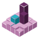
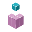
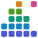
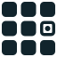

ecco brand · round 3
Logo concepts
Directions for ecco, the community platform that listens to forests. Each concept has a mark, a lockup, one-color versions and a simplified favicon. All lettering is drawn as geometry, so no font is needed in the files. Click any concept to try its favicon in this browser tab.
Round 3 · from the voxel landscape
Five marks built from the isometric voxel view in the plum theme: a mauve plateau, white peaks for calls, teal for a labeled sound.
Pixel check
Each favicon and mark rendered at a true 16 px and 32 px, like on a 1x screen, then enlarged 4 times.
Plateau
The voxel landscape as a small block of land.
- Idea
- A slice of the 3D view. The low mauve plateau is the forest background. The white columns are calls that rise above it, and the teal one has already been labeled.
- Mood
- Crafted, tactile, game-like.
- Works best
- App icon, store listing, onboarding. Closest to the voxel view.

Files: mark-dark.svg lockup-dark.svg mark-light.svg lockup-light.svg mark-mono.svg lockup-mono.svg mark-mono-white.svg lockup-mono-white.svg favicon.svg


Lifted Voxel
One voxel rises out of the block.
- Idea
- A cube of eight voxels with one lifted out and glowing. It is the one sound the listening post was unsure about. Your label puts the block back together.
- Mood
- Simple, curious, playful.
- Works best
- Favicon and app icon. The clearest shape of round 3 at small sizes.

Files: mark-dark.svg lockup-dark.svg mark-light.svg lockup-light.svg mark-mono.svg lockup-mono.svg mark-mono-white.svg lockup-mono-white.svg favicon.svg


Skyline
One row of voxels shaped like a call.
- Idea
- A single row along the time axis. The heights trace a bird call with two syllables, so the row is both a waveform and a mountain ridge.
- Mood
- Rhythmic, calm, landscape-like.
- Works best
- Wide placements: website header, slides, field hardware.
Files: mark-dark.svg lockup-dark.svg mark-light.svg lockup-light.svg mark-mono.svg lockup-mono.svg mark-mono-white.svg lockup-mono-white.svg favicon.svg


Echo Steps
A call and two echoes coming back.
- Idea
- The tall white column is the call. Two shorter, darker columns follow it along the time axis, like echoes that fade. Sound goes out and comes back in three blocks.
- Mood
- Clear, minimal, a little architectural.
- Works best
- Lockups, documentation, merch.
Files: mark-dark.svg lockup-dark.svg mark-light.svg lockup-light.svg mark-mono.svg lockup-mono.svg mark-mono-white.svg lockup-mono-white.svg favicon.svg


Listening Post
A post in the landscape with echo rings around it.
- Idea
- One tall column stands for a listening post in the forest. The rings on the ground are the sound it hears and the labels that come back. It tells the hardware side of the story.
- Mood
- Quiet, grounded, technical.
- Works best
- Hardware labels, maps of posts, partner material.
Files: mark-dark.svg lockup-dark.svg mark-light.svg lockup-light.svg mark-mono.svg lockup-mono.svg mark-mono-white.svg lockup-mono-white.svg favicon.svg


Round 2 · from the spiral view
Five marks built from the radial rays of the spiral view seen from above: plum night, dusty rose, orchid and teal.
Pixel check
Bloom
The spiral view from above, as a flower of sound.
- Idea
- This is how a call looks in the spiral view from above. Every ray is a moment in time and its length is loudness. The gaps are silence. It also reads as a flower or a burst of light.
- Mood
- Lively, warm, a little mysterious.
- Works best
- App icon and splash screen. Closest to the product itself.
Files: mark-dark.svg lockup-dark.svg mark-light.svg lockup-light.svg mark-mono.svg lockup-mono.svg mark-mono-white.svg lockup-mono-white.svg favicon.svg


Whorl
Rays that grow around the time axis into a spiral.
- Idea
- The rays get longer as time goes on, so the burst winds into a spiral shell. It joins the Fiddlehead curl from round 1 with the look of the spiral view. One mark for time, sound and growth.
- Mood
- Calm, organic, hypnotic.
- Works best
- Main brand mark. The spiral silhouette survives at favicon size.
Files: mark-dark.svg lockup-dark.svg mark-light.svg lockup-light.svg mark-mono.svg lockup-mono.svg mark-mono-white.svg lockup-mono-white.svg favicon.svg


Seedhead
A dandelion clock made from the dots view.
- Idea
- With dots at the ray tips, the burst becomes a dandelion. A few seeds drift away, like labels that travel back to the listening posts. Small acts of the community spread far.
- Mood
- Light, gentle, hopeful.
- Works best
- Community and volunteer side, campaigns, stickers.
Files: mark-dark.svg lockup-dark.svg mark-light.svg lockup-light.svg mark-mono.svg lockup-mono.svg mark-mono-white.svg lockup-mono-white.svg favicon.svg


Echo Rays
The Echo mark from round 1, drawn in spiral-view rays.
- Idea
- The two nested c’s stay, but each arc is built from rays of different lengths, like a radial spectrum. The simple shape keeps it legible. The rays give it the texture of the product.
- Mood
- Precise and technical, but softer than round 1.
- Works best
- Product UI, the Echo tool, docs and talks.
Files: mark-dark.svg lockup-dark.svg mark-light.svg lockup-light.svg mark-mono.svg lockup-mono.svg mark-mono-white.svg lockup-mono-white.svg favicon.svg


Dawn Chorus
A sun made of sound, rising over the water.
- Idea
- Birds sing most at sunrise, the dawn chorus. The rays are a sun made of calls, rising over a water line. Light on the water below mirrors the mirrored-surface view.
- Mood
- Hopeful, open, cinematic.
- Works best
- Park partners, posters, the landing page hero.
Files: mark-dark.svg lockup-dark.svg mark-light.svg lockup-light.svg mark-mono.svg lockup-mono.svg mark-mono-white.svg lockup-mono-white.svg favicon.svg


Round 1 · first exploration
The seven directions from the first round, kept for comparison.
Pixel check
Echo
The two c’s become a call and the echo that comes back.
- Idea
- Two nested arcs read as the “cc” in ecco and as rings of sound returning to a source. The dot is the animal call. Each ring is one hue step further, like a sorted color puzzle.
- Mood
- Calm, precise, quietly technical.
- Works best
- App icon, favicon, the in-app Echo tool. Strong at every size.
Files: mark-dark.svg lockup-dark.svg mark-light.svg lockup-light.svg mark-mono.svg lockup-mono.svg mark-mono-white.svg lockup-mono-white.svg favicon.svg


Voxel Ridge
A spectrogram that has grown into a mountain.
- Idea
- Voxel columns from the 3D view stack into a ridge. Rows step from cool (quiet) to warm (loud) like a spectrogram color map. One voxel floats above: the unknown sound that waits for a label.
- Mood
- Playful, game-like, a little retro.
- Works best
- Onboarding, game screens, stickers and merch. Most “fun” of the set.

Files: mark-dark.svg lockup-dark.svg mark-light.svg lockup-light.svg mark-mono.svg lockup-mono.svg mark-mono-white.svg lockup-mono-white.svg favicon.svg


Waveleaf
A leaf whose vein is a sound wave.
- Idea
- The midrib of the leaf is replaced by a bird call: a wave that swells and fades. From afar it is simply a leaf, up close it is sound. Nature carries the data.
- Mood
- Organic, gentle, optimistic.
- Works best
- Nature and park partners, posters, field hardware labels.
Files: mark-dark.svg lockup-dark.svg mark-light.svg lockup-light.svg mark-mono.svg lockup-mono.svg mark-mono-white.svg lockup-mono-white.svg favicon.svg


Fiddlehead
A fern sprout that is also an ear and a spiral.
- Idea
- A young fern curls like the inside of an ear, the part that listens. The curl is also the spiral view of ecco, where sound winds around a time axis. Its outline also hints at a map pin, the spot where a post listens.
- Mood
- Warm, alive, hopeful.
- Works best
- Main brand mark. Works for the community side, the posts and the web app.
Files: mark-dark.svg lockup-dark.svg mark-light.svg lockup-light.svg mark-mono.svg lockup-mono.svg mark-mono-white.svg lockup-mono-white.svg favicon.svg


Decay
The word itself echoes and fades out.
- Idea
- A wordmark-first concept. The letters of ecco step down in strength like an echo, and two trailing beats fade after the o. The mark is the e with that same fading rhythm.
- Mood
- Editorial, rhythmic, understated.
- Works best
- Wordmark in headers, presentations, print. The mark is weaker alone.
Files: mark-dark.svg lockup-dark.svg mark-light.svg lockup-light.svg mark-mono.svg lockup-mono.svg mark-mono-white.svg lockup-mono-white.svg favicon.svg


Still Water
A spruce and its reflection, the mirrored surface view.
- Idea
- Above the water line stands the forest. Below it the reflection breaks into ripples that read as sound lines. It mirrors the app’s mirrored-surface view and the idea that the forest speaks back.
- Mood
- Quiet, serene, Nordic.
- Works best
- National park partners, signage, the listening posts themselves.
Files: mark-dark.svg lockup-dark.svg mark-light.svg lockup-light.svg mark-mono.svg lockup-mono.svg mark-mono-white.svg lockup-mono-white.svg favicon.svg


Hue Grid
A color puzzle with one tile left for you.
- Idea
- Nine tiles in a smooth color field, like a sorted hue puzzle or a tiny spectrogram. One tile is open: the sound the post was unsure about. Your label completes the picture.
- Mood
- Bright, social, game-first.
- Works best
- Community features, badges, social posts, the labeling game.


Files: mark-dark.svg lockup-dark.svg mark-light.svg lockup-light.svg mark-mono.svg lockup-mono.svg mark-mono-white.svg lockup-mono-white.svg favicon.svg